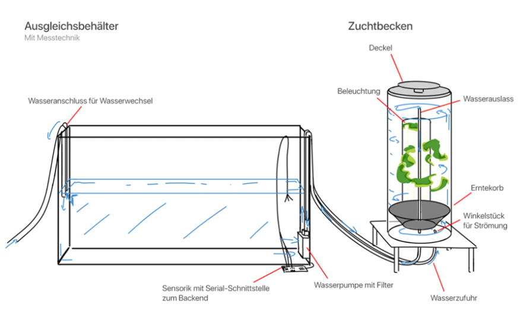
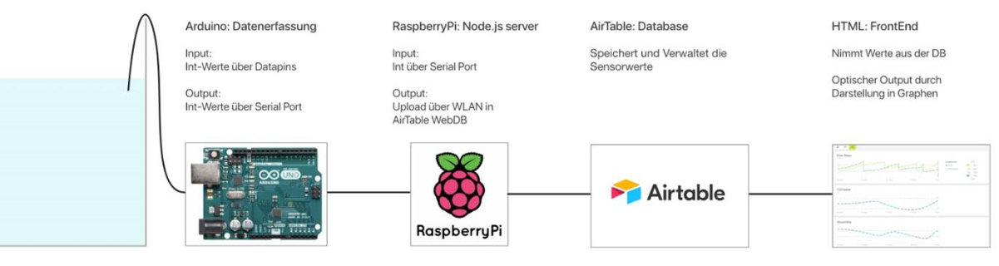

Alva
Zusammenfassung
Alva ist eine Algenzuchtanlage für den privaten Gebrauch. Es handelt sich dabei um einen Tank in dem Makroalgen gezüchtet werden, Sensorik und eine App, die zur Überwachung der Wasserwerte sowie der Verwertung der Algen benutzt wird. Das Projekt entstand in Kooperation mit Produktgestaltungsstudierenden - Amelie Straubmüller, Johannes Wurster, Kim Beets - und Kommilitonen aus meinem Studiengang: Jonathan Hörmann und Lukas Geiger. Für die Sensorik verwendeten wir Arduino, einen Raspberry Pi, JavaScript und Airtable, eine Cloud Datenbank. Die Live-Ausgabe der Sensorwerte erfolgte auf einer HTML-Seite mit Hilfe von charts.js. Die App haben wir in Adobe Xd gestaltet. Unser Projekt wurde von der goHfG Gründungsoffensive der Hochschule ausgezeichnet.
Warum Algen?
Ein großer Vorteil ist die Entlastung der klassischen Landwirtschaft. Algen müssen mit der Landwirtschaft nicht im Konflikt stehen, da Mikroalgen, beispielsweise, auch an Hauswänden angebaut werden können. Makroalgen können ohne fruchtbaren Boden angebaut werden, ohne den Einsatz von Pestiziden mit einem höheren Ertrag erreichen als Naturpflanzen wie Soja oder Mais. Da Algen sehr proteinreich sind und in keiner Konkurrenz zur klassischen Landwirtschaft stehen, können sie maßgeblich bei der ausreichenden Lebensmittelproduktion für alle beitragen. Dies gilt auch im Hinblick auf das Bevölkerungswachstum. Des weiteren sind Algen sehr effizient im Binden von CO2. 30 g Algen absorbieren nämlich ungefähr 55g CO2 durch Photosynthese.

Was benötigen Algen?
Zunächst mussten wir, neben grundlegender Aquaristik, augiebig recherchieren, welche Algen geeignet sind, wie wir diese beschaffen können und welche Beschaffenheit das Wasser haben sollte. In unserer Recherche stießen wir auf Experten, die uns die Makroalge Ulva Lactuca, oder auch grüner Meersalat, zusandten und uns mit Informationen unterstützten. Wir zogen die Algen einige Monate lang in einem Aquarium Becken. Unter idealen Bedingungen vermehrt sich der grüne Meersalat in wenigen Wochen um das Doppelte. Diese Bedingungen sind Wassertemperatur, Härte, der CO2 Gehalt und der pH-Wert des Wassers. Die Wasserwerte konnten wir mit passender Sensorik überwachen. Außerdem sind Wasser mit 20% Salzgehalt, eine ständige Wasserbewegung und eine Lichtzufuhr von Nöten.
Die Lichtzufuhr gewährleisteten wir durch einen LED Streifen. Dieser musste wasserfest sein und die richtige Lichtfarbe erzeugen. Für unseren Prototypen betrieben wir den LED Streifen mit einem Netzteil, da die LEDs mehr Strom benötigen, als ein Arduino erzeugen kann.
Funktionsprinzip
Um den Aufbau und die Wartung des Algentanks möglichst simpel zu halten, haben wir einen Ausgleichsbehälter mit in unser System eingebunden. Alle Messungen und Ausgleichsmaßnahmen werden an diesem Behälter vorgenommen. Wegen des Kreislaufs zwischen den Behältern ist es möglich mehrere Zuchtbecken anzuschließen, die sich den Ausgleichsbehälter teilen.
Die Messwerte werden, wie in der Grafik zu sehen ist, vom Arduino bis ins Front End übertragen. Im Prototyp werden die Sensorwerte live ausgegeben.
App
Um dem Nutzer die Algenzucht zu erleichtern, haben wir eine App mit Hilfen bei der Handhabung und Verwertung der Algen erstellt. Hier ist das Dashboard zu sehen. Es ist sofort sichtbar, welche Aufgaben unmittelbar anstehen und welche in den nächsten Tagen zu erledigen sind. Zum Beispiel ist am gezeigten Tag das Säubern der Wasseroberfläche angesetzt. Auch unmittelbar erkennbar sind die aktuellen Messwerte und, ob sich diese im Idealbereich befinden. Abgesehen davon hat der Nutzer die Möglichkeit Rezepte aufzurufen, um die erwartete Wochenernte zu verarbeiten.
Auf diesem Bild ist die Historie der Sensorwerte zu sehen. Um die Auswirkungen der Messwerte auf das Wachstum der Algen zu zeigen, können diese Aspekte hier leicht verglichen werden. Dieser Screen ist gleichzeitig in unserem Prototypen das Front End für die live Ausgabe der Sensorwerte. Die folgenden Bilder zeigen eine Rezeptseite und die Bibliothek.
Algentank
An der Gestaltung des Algentanks war ich nicht maßgeblich beteiligt. Dennoch möchte ich ihn zeigen. Alle Renderings wurden von Amelie Straubmüller, Kim Beets und Johannes Wurster erstellt.
Die Erntevorrichtung ist so konzipiert, dass man einen Korb mithilfe eines Glasstabs in der Mitte herausziehen kann. Die Algen werden dann mit dem Korb hinaufgehoben. Der Deckel des Tanks und der Korb sind größentechnisch aneinander angepasst. Somit kann der Korb in den umgedrehten Deckel gestellt werden, was ein Ernten ohne Tropfen ermöglicht.